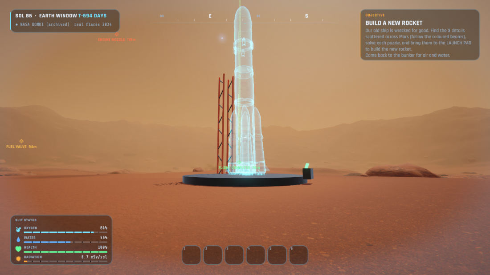
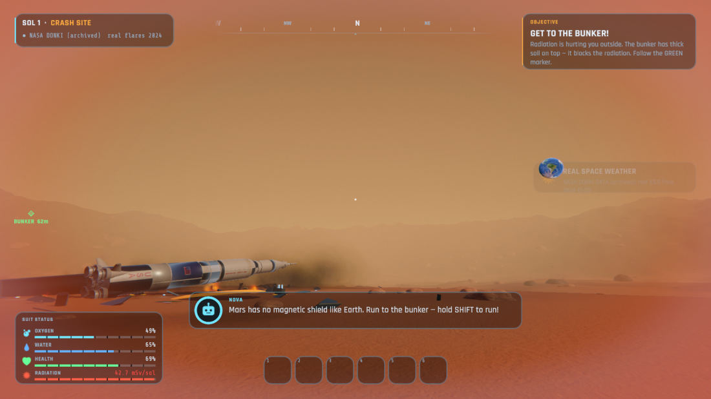
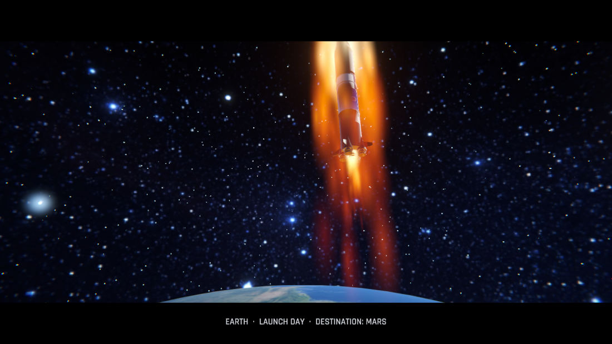
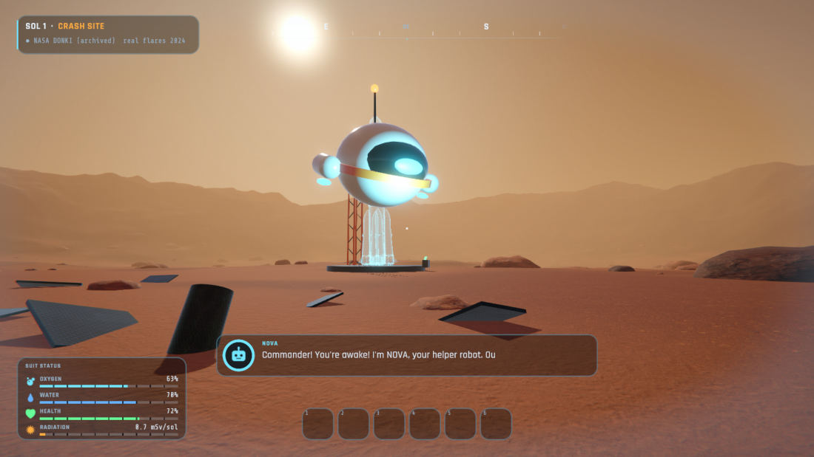
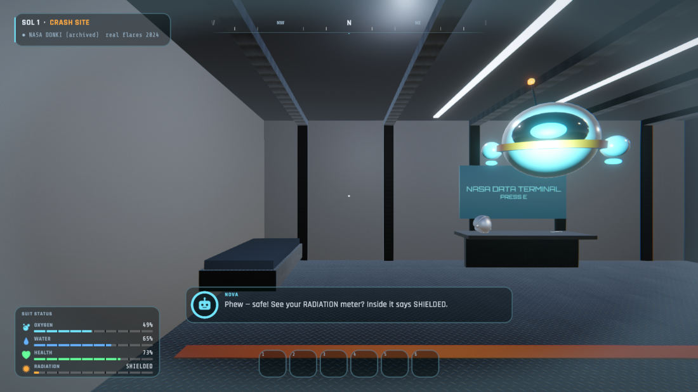
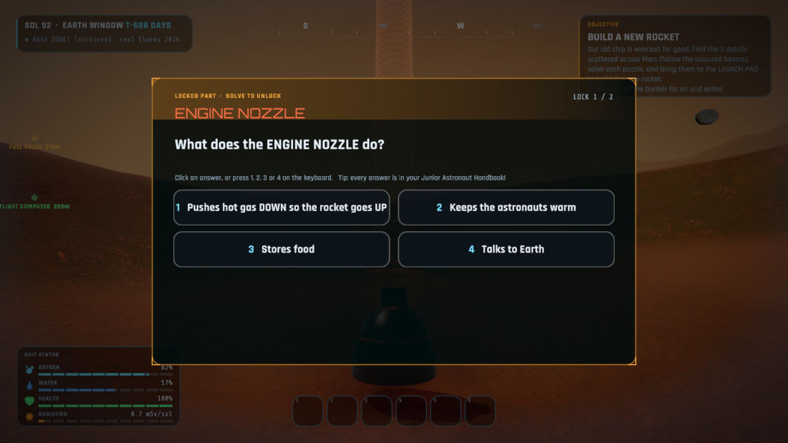
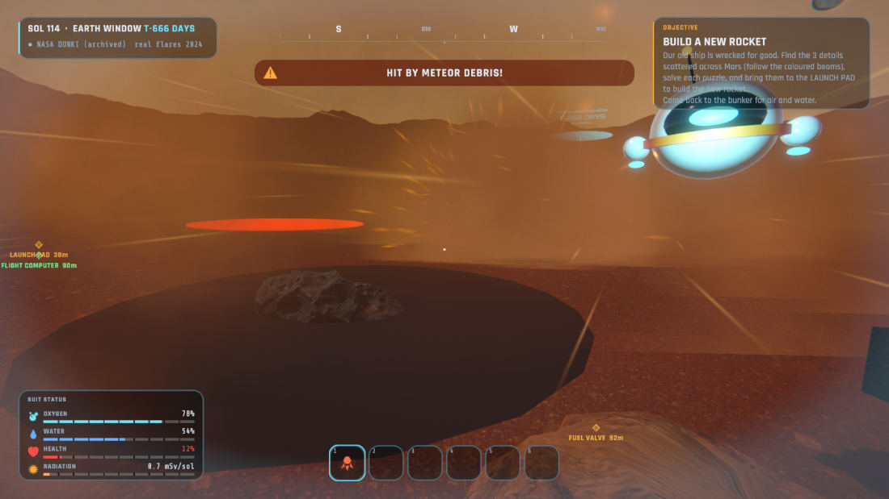
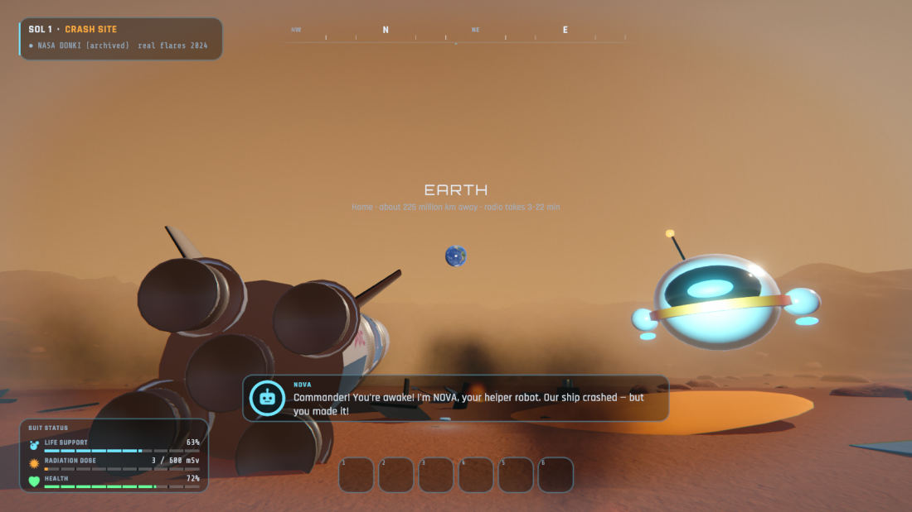
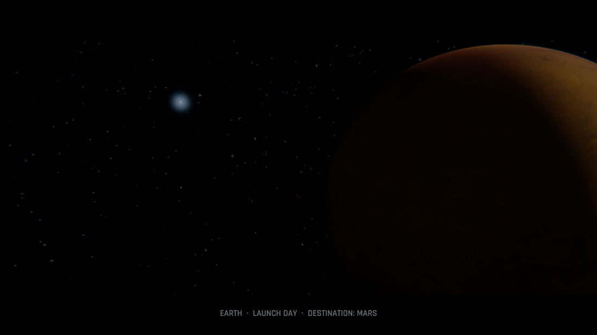

Your ship has crashed on Mars. Hide from a real solar storm, make air and water, rebuild your rocket and fly home when Earth comes back around. A free 3D game and handbook for kids aged 7–12, built on real NASA data.
Best on a computer with keyboard and mouse (Chrome or Edge). First load takes about a minute.
The Handbook and the game teach the same ideas. Every puzzle in the game uses a question from the book's quiz.

21 illustrated pages about space, Mars, radiation, air and water, with activities and a quiz.

A real NASA solar flare is coming. Find shelter, set up MOXIE for oxygen and melt ice for water.

Solve puzzles for 3 rocket parts, rebuild your rocket and launch when the 26-month window opens.





Every danger and machine in Mission Mars comes from a real NASA mission or dataset.
The solar storm in the game is a real flare measured by NASA: live flares from the last 30 days, or real archived ones (like X9.0 on 3 Oct 2024).
Your shelter decision follows real space weather.
DONKI →Your radiation meter uses Curiosity's measurement: about 0.67 mSv per sol on the Martian surface.
Mars has no magnetic field, so you need shielding.
Curiosity →MOXIE turned Mars CO₂ into oxygen: 122 g in total, up to 12 g per hour. Your oxygen maker works the same way.
Making air on Mars is real NASA technology.
Perseverance →NASA radar found large sheets of ice under the ground. Your ice-to-water machine melts it.
Water is the key to living on Mars.
MRO →Earth and Mars line up for the shortest trip only about every 26 months. That is the countdown above your base.
Astronauts can't fly home whenever they want.
Perseverance, Ingenuity, the Mars Reconnaissance Orbiter and the Saturn V in the game are official NASA models.
Real hardware kids can recognise.
3D Resources →
Free, in your browser, no download needed.